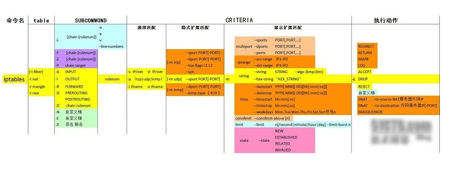

纸上得来终觉浅，绝知此事要躬行。
iptables 是运行在用户空间的应用软件，通过控制 Linux 内核 netfilter 模块，来管理网络数据包的处理和转发。在大部分 Linux 发行版中，可以通过手册页 或 man iptables 获取用户手册。通常 iptables 需要内核模块支持才能运行，此处相应的内核模块通常是 Xtables。
【1】自定义链的原因
【2】用户自定义链的设计
【3】用户自定义链创建
【4】用户自定义链重命名
【5】用户自定义链删除
【6】实战演示

- 【1】自定义链的原因
之前，我们一直在使用的都是 iptables 默认链中定义规则，所有我们也可以自定义链。
当默认链中的规则非常多时，不方便我们管理。
想象一下，如果 INPUT链中存放了 200 条规则，这 200 条规则有针对 httpd 服务的，有针对 sshd 服务的，有针对私网 IP 的，有针对公网 IP 的。假如，我们突然想要修改针对 httpd 服务的相关规则，难道我们还要从头看一遍这 200 条规则，找出哪些规则是针对 httpd 的吗？这显然不合理。
所以，iptables 中可以自定义链，通过自定义链即可解决上述问题。
- 【2】用户自定义链的设计
假设，我们自定义一条链，链名叫 IN_WEB。我们可以将所有针对 80 端口的入站规则都写入到这条自定义链中，当以后想要修改针对 Web 服务的入站规则时，就直接修改 IN_WEB 链中的规则就好了。即使默认链中有再多的规则，我们也不会害怕了，因为我们知道，所有针对 80 端口的入站规则都存放在 IN_WEB 链中。
同理，我们可以将针对 sshd 的出站规则放入到 OUT_SSH 自定义链中，将针对 Nginx 的入站规则放入到 IN_NGINX 自定义链中，这样，我们就能想改哪里改哪里，再也不同担心找不到规则在哪里了。
但是需要注意的是，自定义链并不能直接使用，而是需要被默认链引用才能够使用。
- 【3】用户自定义链创建
# 清空防火墙
$ sudo iptables -t filter -F
# 创建一个自定义链为IN_WEB
$ sudo iptables -t filter -N IN_WEB
# 可以看到自定义的IN_WEB链
$ sudo iptables -t filter -nvL
Chain IN_WEB (0 references)
pkts bytes target prot opt in out source destination
......自定义链创建完成后，查看 filter 表中的链。发现自定义链已经被创建，而且这条自定义链的引用计数为 0 (0 references)，也就是说，这条自定义链还没有被任何默认链所引用。所以，即使 IN_WEB 中配置了规则，也不会生效。
自定义链已经创建完毕，现在我们就可以直接在自定义链中配置规则了。
# 对自定义链的操作与对默认链的操作基本一致
$ sudo iptables -I IN_WEB -s 192.168.31.139 -j REJECT
$ sudo iptables -t filter -I IN_WEB -s 192.168.31.140 -j REJECT
# 两者操作基本一致
$ sudo iptables -t filter -nvL
Chain IN_WEB (0 references)
pkts bytes target prot opt in out source destination
0 0 REJECT all -- * * 192.168.31.140 0.0.0.0/0 reject-with icmp-port-unreachable
0 0 REJECT all -- * * 192.168.31.139 0.0.0.0/0 reject-with icmp-port-unreachable
......自定义链中已经有了一些规则，但是现在这些规则无法匹配到任何报文，因为我们并没有在任何默认链中引用它。既然 IN_WEB 链是为了针对 Web 服务的入站规则而创建的，那么这些规则应该去匹配入站的报文，所以我们应该用 INPUT 链去引用它。
当然，自定义链在哪里创建，应该被哪条默认链引用，取决于实际的工作场景，因为此处示例的规则是匹配入站报文，所以在 INPUT 链中引用自定义链。
# 定义引用规则，使用-j指定自定义链
# 在INPUT链中添加了一条规则，访问本机80端口的tcp报文将会被这条规则匹配到IN_WEB链
$ sudo iptables -t filter -I INPUT -p tcp --dport 80 -j IN_WEB# 查看定义的引用规则
$ sudo iptables -t filter -nvL
Chain INPUT (policy ACCEPT 0 packets, 0 bytes)
pkts bytes target prot opt in out source destination
0 0 IN_WEB tcp -- * * 0.0.0.0/0 0.0.0.0/0 tcp dpt:80
Chain IN_WEB (1 references)
pkts bytes target prot opt in out source destination
0 0 REJECT all -- * * 192.168.31.140 0.0.0.0/0 reject-with icmp-port-unreachable
0 0 REJECT all -- * * 192.168.31.139 0.0.0.0/0 reject-with icmp-port-unreachable
......我们使用 -j 选项指定动作，而此处，我们将动作替换为了自定义链。当 -j 对应的值为一个自定义链时，就表示被当前规则匹配到的报文将交由对应的自定义链处理，具体怎样处理取决于自定义链中的规则。
当 IN_WEB 自定义链被 INPUT 链引用以后，可以发现，IN_WEB 链的引用计数已经变为 1，表示这条自定义链已经被引用了 1 次，自定义链还可以引用其他的自定义链。
那么此刻，我们在 192.168.31.140 上尝试访问本机的 80 端口，已经被拒绝访问，证明刚才自定义链中的规则已经生效了。
- 【4】用户自定义链重命名
过了一段时间，我们发现 IN_WEB 这个名字不太合适，我们想要将这条自定义链重命名，把名字改成 WEB。
# 自定义链重命名
$ sudo iptables -t filter -E IN_WEB WEB# 查看定义的引用规则
$ sudo iptables -t filter -nvL
Chain INPUT (policy ACCEPT 0 packets, 0 bytes)
pkts bytes target prot opt in out source destination
0 0 WEB tcp -- * * 0.0.0.0/0 0.0.0.0/0 tcp dpt:80
Chain WEB (1 references)
pkts bytes target prot opt in out source destination
0 0 REJECT all -- * * 192.168.31.140 0.0.0.0/0 reject-with icmp-port-unreachable
0 0 REJECT all -- * * 192.168.31.139 0.0.0.0/0 reject-with icmp-port-unreachable- 【5】用户自定义链删除
好了，我们已经能够创建自定义了，那么怎样删除自定义链呢？可以使用 iptables 的 -X 选项可以删除自定义链。
但是删除自定义链时，需要满足两个条件：
- 1、自定义链没有被任何默认链引用，即自定义链的引用计数为
0。 - 2、自定义链中没有任何规则，即自定义链为空。
# (1) 删除引用自定义链的规则
$ sudo iptables -t filter -D INPUT 1
# (2) 需要清空对应的自定义链
$ sudo iptables -t filter -F WEB
# (3) 删除自定义链
$ sudo iptables -t filter -X WEB- 【6】实战演示
# 清空nat链的规则
$ sudo iptables -t nat -F
# 创建自定义链
$ sudo iptables -N clean_in
# 限制icmp协议的广播ping
$ sudo iptables -A clean_in -d 255.255.255.255 -p icmp -j DROP
$ sudo iptables -A clean_in -d 172.16.255.255 -p icmp -j DROP
# 禁止非法包
$ sudo iptables -A clean_in -p tcp ! --syn -m state --state NEW -j DROP
$ sudo iptables -A clean_in -p tcp --tcp-flags ALL ALL -j DROP
$ sudo iptables -A clean_in -p tcp --tcp-flags ALL NONE -j DROP#（1）如果是外网访问本地地址172.16.100.7则交给自定义链clean_in处理
$ sudo iptables -A INPUT -d 172.16.100.7 -j clean_in
#（2）如果自定义链没有一条匹配上，则return回去；自定义链返回
$ sudo iptables -A clean_in -d 172.16.100.7 -j RETURN
#（3）本地回环接口都允许
$ sudo iptables -A INPUT -i lo -j ACCEPT
$ sudo iptables -A OUTPUT -o lo -j ACCEPT
#（4）禁止端口
$ sudo iptables -A INPUT -i eth0 -m multiport -p tcp --dports 53,113,135,137,139,445 -j DROP
$ sudo iptables -A INPUT -i eth0 -m multiport -p udp --dports 53,113,135,137,139,445 -j DROP
$ sudo iptables -A INPUT -i eth0 -p udp --dport 1026 -j DROP
$ sudo iptables -A INPUT -i eth0 -m multiport -p tcp --dports 1433,4899 -j DROP
# icmp速率限制
$ sudo iptables -A INPUT -p icmp -m limit --limit 10/second -j ACCEPT